Zusammenrühren, formen, abwerfen - fertig!

Was du für ca. 6 Saatbomben brauchst:
Zutaten:
-
Wasser
-
4-5 Esslöffel Tonpulver oder Tonerde (z.B. aus der Apotheke)
-
4-5 Esslöffel Erde (am besten ohne Torf)
-
1 Teelöffel heimische Blumensamen (z.B. Ringelblumen, Kornblumen oder Sonnenblumen)
-
Karton oder Eierschachtel zum Trocknen und Aufbewahren
Werkzeug:
-
Teelöffel
-
Esslöffel
-
große Schüssel
-
geeigneter Ort für den Abwurf
Rezept:
Da es ein bisschen dreckig werden kann, geh am besten nach draußen auf den Balkon oder in den Garten, um deine Saatbomben zu formen.
Schütte zuerst etwas Tonerde auf einen harten Untergrund. Zermalme sie mit einem Stein, damit Pulver daraus wird. So halten die Kugeln später nämlich besser zusammen. Wenn du bereits Tonpulver gekauft hast, kannst du es direkt so, wie es ist, verwenden.
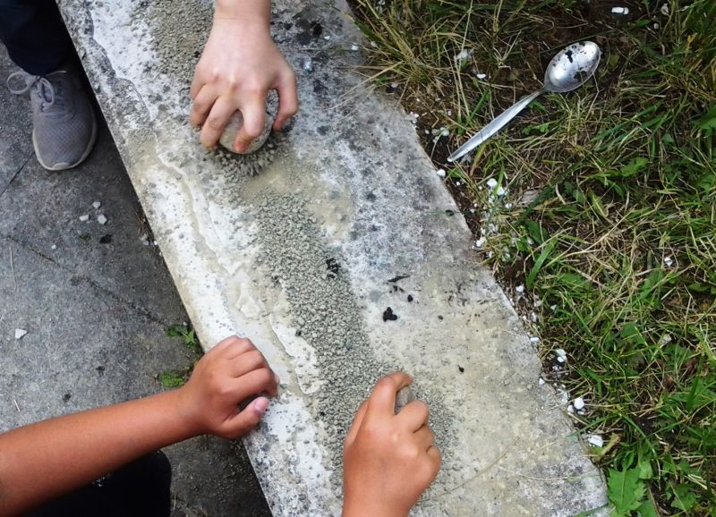
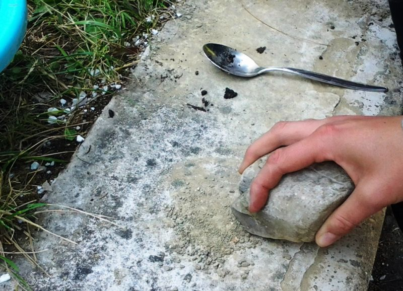
Streue nun die angegebene Menge Erde in eine große Schüssel und vermenge sie mit den Blumensamen.
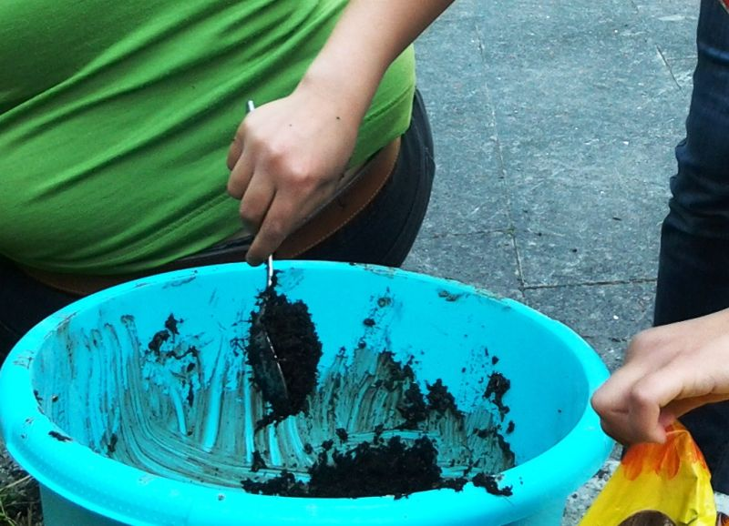
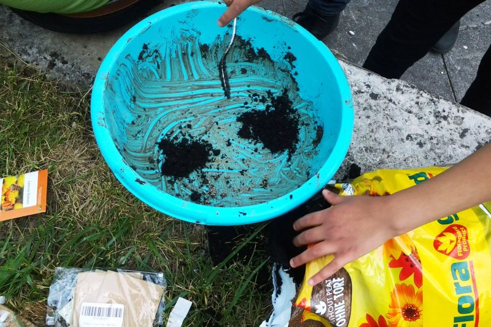
Jetzt kannst du bereits das Tonpulver dazumischen.
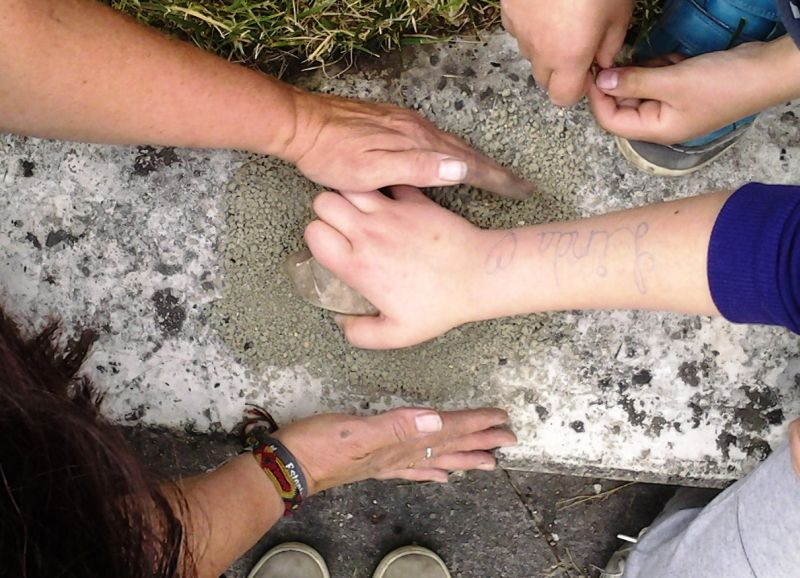
Gib anschließend etwas Wasser dazu und forme walnussgroße Kugeln aus dem Gemisch. Die Samenkugeln sollen sich zum Schluss geschmeidig anfühlen, aber trotzdem fest zusammenhalten. Wenn du merkst, dass das noch nicht so ist, füge einfach noch ein bisschen Wasser hinzu.
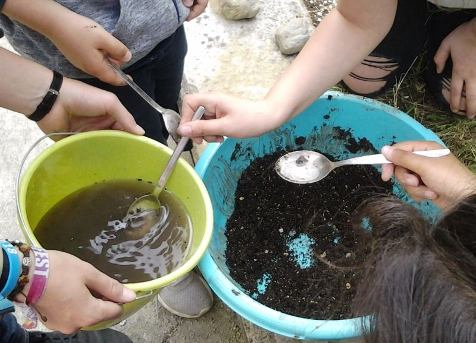
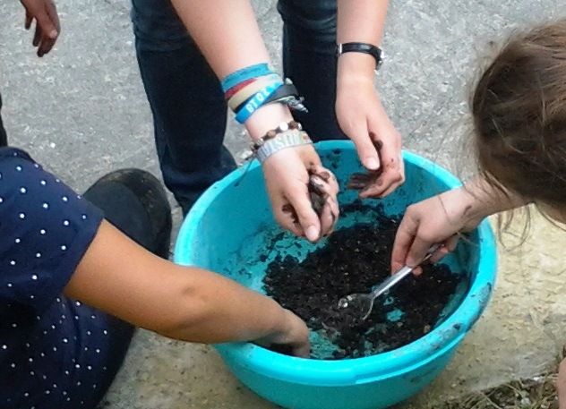
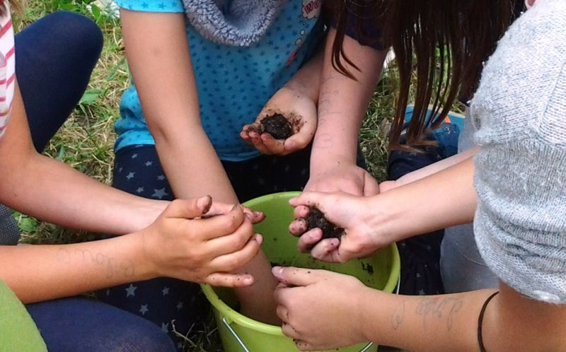
Und dann bist du auch schon fertig. So schnell und simpel können Saatbomben hergestellt werden!
Zum Trocknen legst du die Kugeln am besten in eine leere Eierschachtel oder einen Karton. Hier müssen die Bomben nun ein paar Tage bleiben bevor du sie an einem geeigneten Ort abwerfen kannst.
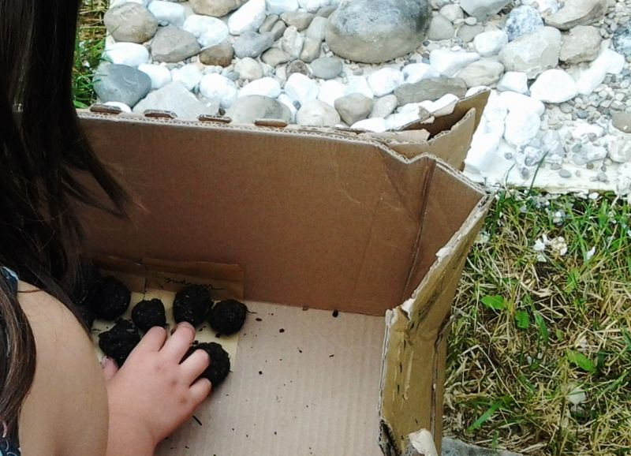
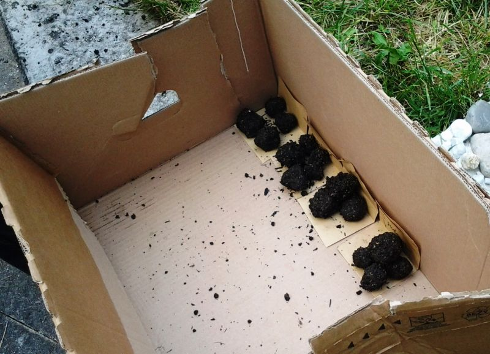
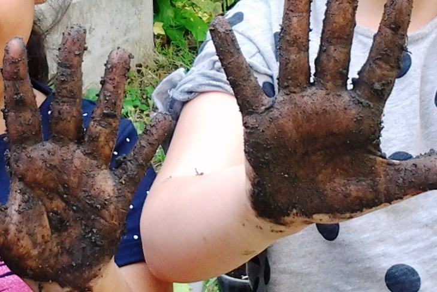
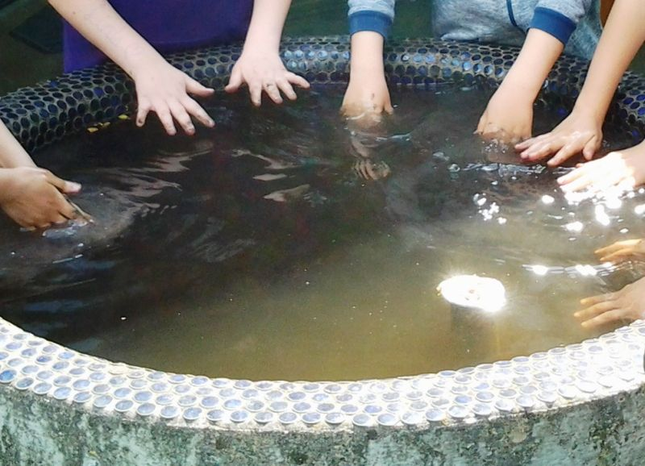
Einen passenden Ort findest du, indem du auf der Packung der Samen nachsiehst, ob die Pflanzen eher Schatten oder Sonne zum Wachsen brauchen. Wenn du dich darüber informiert hast, kann’s losgehen. Mach dich auf die Suche nach einem netten Plätzchen, wo du die Kugeln abwerfen möchtest – vielleicht am Rand eines Flusses, bei einem Feldweg, im Wald oder in der Nähe einer Straße; nur auf privaten Grundstücken und landwirtschaftlich genutzten Flächen sind Saatbomben verboten. Nach ungefähr zwei Wochen werden die Samen anfangen zu keimen. Schau einfach immer wieder mal an deinen Abwurforten vorbei und beobachte, wie schnell die Pflanzen heranwachsen. Die beste Zeit zum Gedeihen der Kugeln ist übrigens von Frühjahr bis jetzt. Also setze das Projekt, wenn du Lust und Zeit hast, am besten sofort um!
So wird die Stadt dank dir ein bisschen bunter und freundlicher!
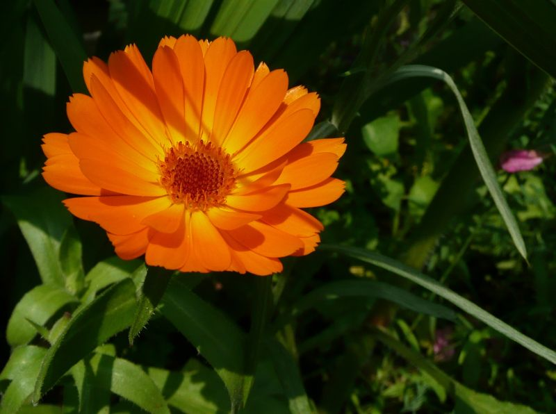
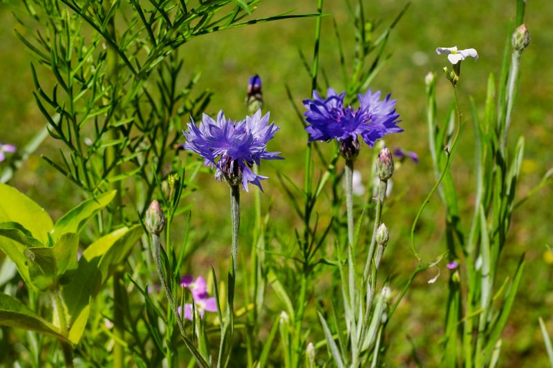
Die Fotos in diesem Beitrag sind übrigens an einer Grundschule im Landkreis München entstanden. Dort bastelten einige Kinder die Saatbomben in Kooperation mit dem Kreisjugendring München-Land für das Projekt “29++ Klima. Energie. Initiative”, das Umweltbildung und Klimaschutz zum Ziel hat.